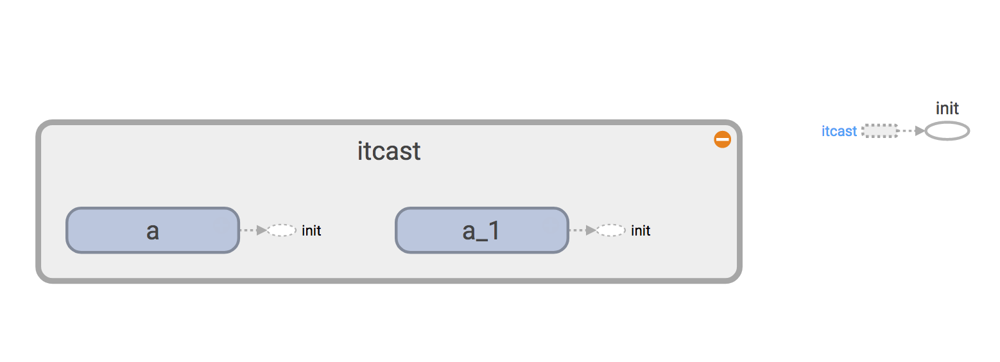

变量作用域
tensorflow提供了变量作用域和共享变量这样的概念，有几个重要的作用。
- 让模型代码更加清晰，作用分明
变量作用域域
通过tf.variable_scope(
with tf.variable_scope("itcast") as scope:
print("----")
加上with语句就可以在整个itcast变量作用域下就行操作。
嵌套使用
变量作用域可以嵌套使用
with tf.variable_scope("itcast") as itcast:
with tf.variable_scope("python") as python:
print("----")
变量作用域下的变量
在同一个变量作用域下，如果定义了两个相同名称的变量（这里先用tf.Variable()）会怎么样呢？
with tf.variable_scope("itcast") as scope:
a = tf.Variable([1.0,2.0],name="a")
b = tf.Variable([2.0,3.0],name="a")
我们通过tensoflow提供的计算图界面观察

我们发现取了同样的名字，其实tensorflow并没有当作同一个，而是另外又增加了一个a_1，来表示b的图
变量范围
当每次在一个变量作用域中创建变量的时候，会在变量的name前面加上变量作用域的名称
with tf.variable_scope("itcast"):
a = tf.Variable(1.0,name="a")
b = tf.get_variable("b", [1])
print(a.name,b.name)
得道结果
(u'itcast/a:0', u'itcast/b:0')
对于嵌套的变量作用域来说
with tf.variable_scope("itcast"):
with tf.variable_scope("python"):
python3 = tf.get_variable("python3", [1])
assert python3.name == "itcast/python/python3:0"
var2 = tf.get_variable("var",[3,4],initializer=tf.constant_initializer(0.0))
```